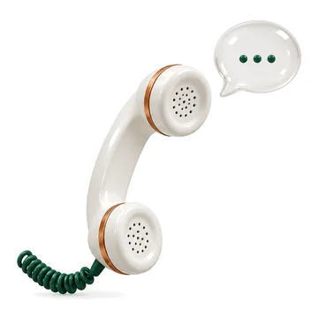
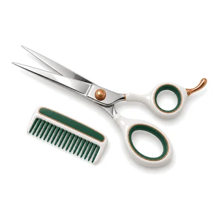
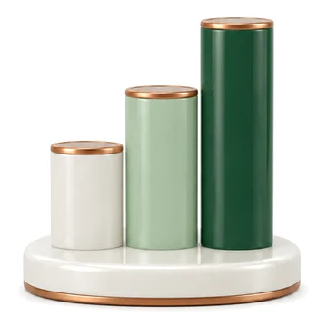

こんなことで、
困っていませんか？
職種ごとに、
1職種ずつ、チェック
全職種 0 / 4
同じ飼い主さん・同じ子の情報を、いくつもの画面や紙に打ち直している
ワクチン歴・体重・会計・処方を見るのに、タブを何度も切り替えている
次に出勤するスタッフへの引き継ぎを、口頭やメモで伝えている
足りない物をホワイトボードや紙に書き、発注を忘れる
受付0 / 6
初診の方に、ネット予約の手順を書いた紙を渡して説明している
予約表と電子カルテを別々に開き、同じことを2回打っている
次の予約を取るのに、会計のあと予約表を開き直して空きを探している
予約表を見ながら当日の患者さんを来院予定に入れ、カルテ棚から出しておく
ワクチンのお知らせを、はがきで送っている
健診の結果を印刷し、手書きを添えて郵送している
獣医師0 / 9
診察のあと、カルテを打つ時間がとれない
血液検査の結果を読み、過去の記録を読み返してから健診のコメントを書いている
健診の報告書を作るのに、パソコンの前に座る時間がいる
専門診療の報告書づくりが重く、報告が遅れがち
紹介状を、毎回いちから書いている
健診の結果を PDF や PowerPoint で保存し、フォルダの中から探している
レントゲンはこのソフト、手術の写真は別のフォルダ。見せるたびに探している
休みの日も、担当の患者さんの検査結果が気になる
論文が多く、どれを信じて読めばよいか迷う

動物看護師0 / 2
入院のたびに、体重・体温・入院理由・飲んでいる薬を紙やホワイトボードに書き写している
昼休みも予約の電話が鳴り、休憩が途切れる

トリマー0 / 2
ネット予約で受けられるのは診察だけ。ホテルとトリミングは複雑で載せられない
ペットホテルと入院を、別々の台帳で管理している

院長0 / 5
出勤日が決まるたびに、予約システムの枠を開け直している
売上の分析を、締めてから自分で表にまとめている
月末に、スタッフの勤怠を手で集計している
小口現金と領収書の管理が、ノートと封筒のまま
予約と電話の自動応答に、カルテとは別の会社へ毎月払っている
まずは資料を、
LINE で受け取ってください。
LINE で
病院名・院長名・